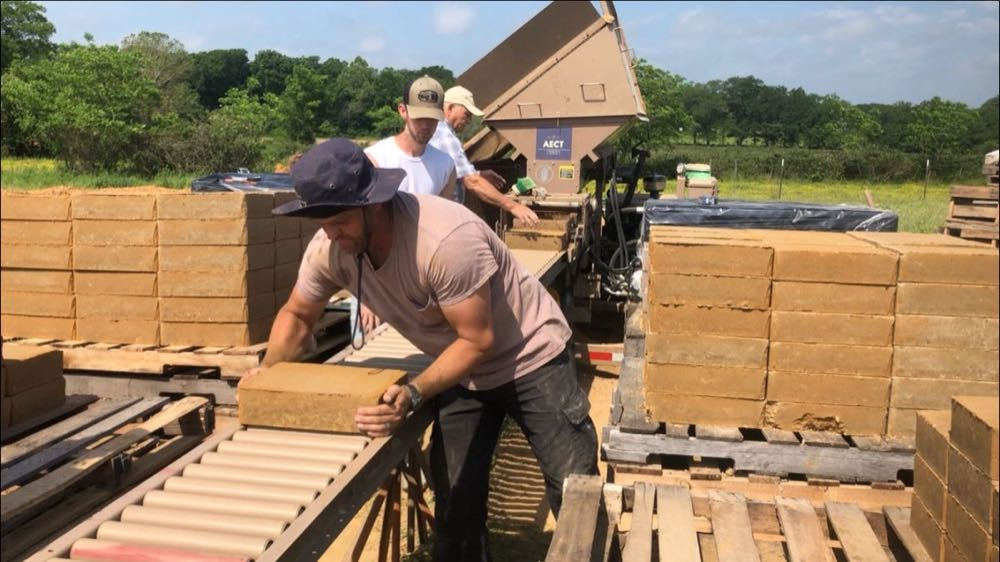
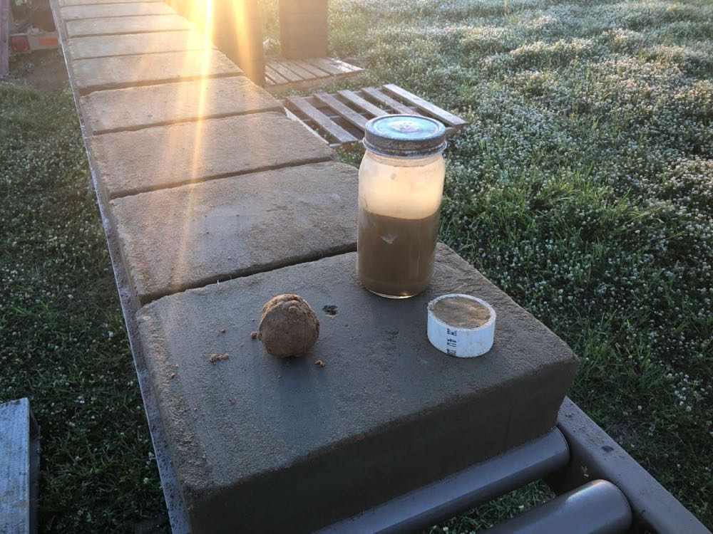
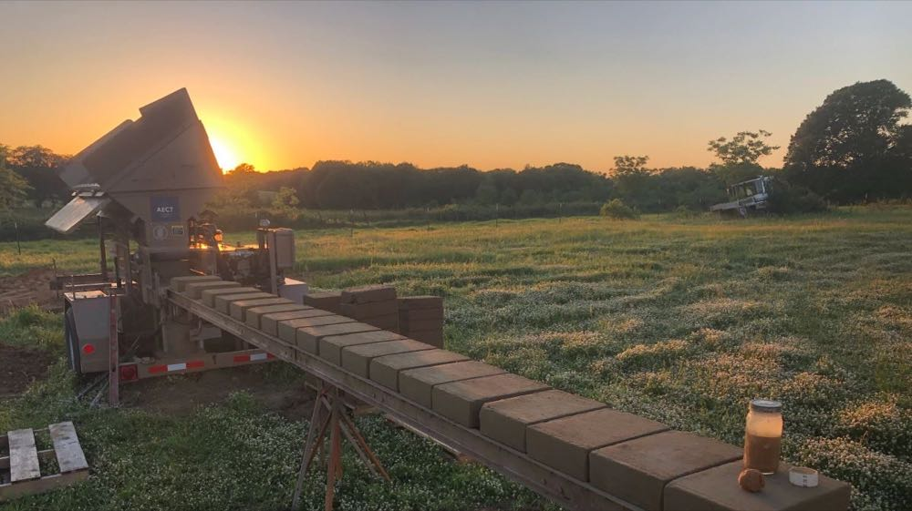
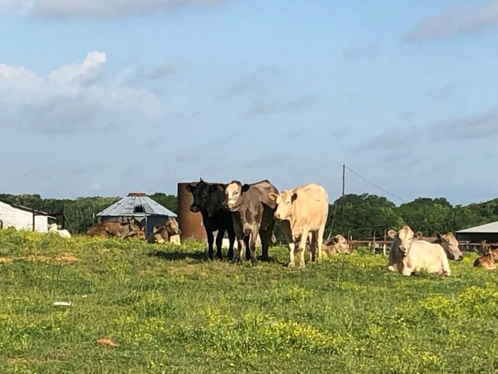
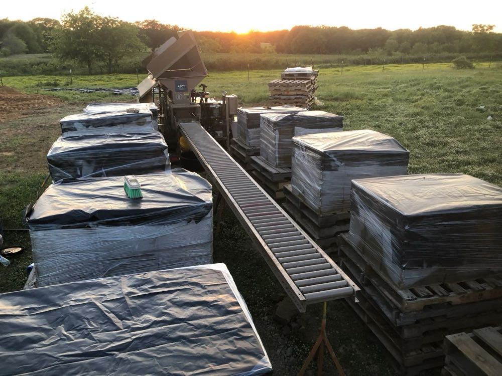
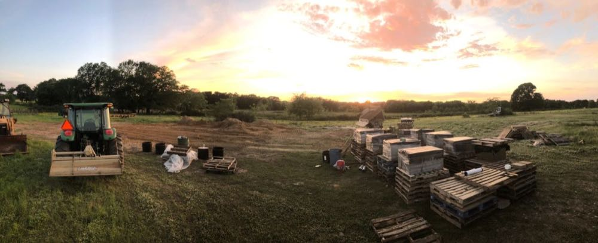
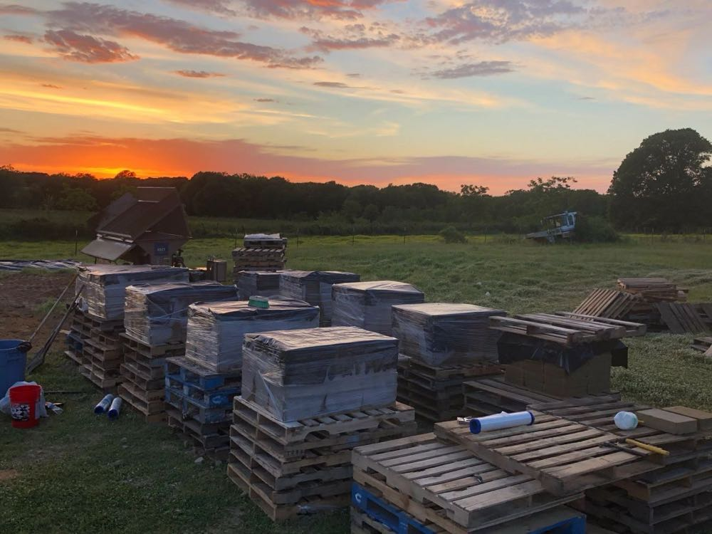

We had a great experience making CEBs outside of Durant, OK last week. We took a 15-year old AECT mixer and an 11-year old 3500 machine 400 miles up the road and across the Red River to the client's build site...and were able to start making 10" x 14" x 3.5" CEBs right away. The client had dug about 300 cubic yards of beautiful red clay/sand earthen material out of his land to make a fishing pond/stock tank, and after a quick composition analysis and expansion test on the material, we knew it would make excellent cement-stabilized CEBs!
At AECT, one of our mantras is that having the right soil is important...but having the right moisture is CRITICAL! To make excellent CEBs, you only want about 5% moisture in your material. Much less than that, and the material will not have enough moisture to adhere into a good, tight block...you will also notice that the CEB machine is having to apply an excessive amount of pressure (2,000+ PSI) to try and squeeze the material into your desired block thickness. Conversely, if you get too much moisture in your material, you won't be able to get enough pressure (900 to 1,800 PSI) on the press of the block and will notice that the blocks are not holding together as well. In our case last week, we were working with very wet earthen material. The area we were to be working in had gotten a couple inches of rain the night before we arrived, so it was very wet to the touch. If I had to estimate, I would say there was probably about 20% moisture in the soil.
One saving grace when stabilizing with lime or cement is that adding those stabilizers has a tendency to dry out wet soil, to a degree. Because we were making cement-stabilized CEBs for this particular client, we decided to add in the requisite amount of cement to a two-yard batch of earthen material on the first evening, just to see if we could get some workable material. The result was not good...we ended up with a lot of bad blocks...but we used the experience as a good chance to instruct on the use of our AECT machinery and to demonstrate the importance of having the right amount moisture in the material.
Another piece of good news is that, given a sunny and/or windy day, wet soil can be dried out fairly quickly (within a day or so). The best thing to do when you're stuck with wet soil is to lay a day's worth of soil (in our case, about 20 cubic yards) on the ground as flat as possible (about 8" high), and just let it dry out in the sun. It also helps to till the soil about once every hour as well. This is what we did on this project and the soil dried out beautifully. We were making good tight CEBs in no time, hitting around 1300 to 1500 PSI as the blocks were pressed.
Once our soil was adequately dry, we wanted to keep it that way. With overnight rain predicted a couple days later, we made sure to cover our entire bed of soil with a 100' x 20' sheet of 6 mil plastic. You can get a roll of this at Lowes or Home Depot for about $100; you can use it over and over again, and ultimately you can cut it up into 5' x 5' pieces to cover your pallets of CEBs with. We made sure to weigh down the plastic sheet with blocks and pallets, so it wouldn't blow away during the storm. Because of our preparation, even after a another 1.5" of rain came through that night, we were still able to work with nice dry soil the next day! You can see our Oklahoma block-making plant here:
By the end of the week, we were producing about 22 pallets (1,200 CEBs) each day. We are already over half way to our required 9,000 CEBs...before we know it, we will be done with block making and moving into construction on this exciting CEB home! We can't wait to see how it turns out. Stay tuned!





